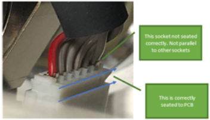
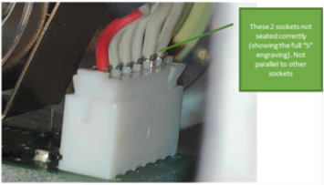

Incubator Temperature Fails Plausibility Check
Error Codes
| Dec | Hex | Module |
|---|---|---|
|
032.001.00114 |
20.01.72 |
High Temp (Inc. 1) |
|
033.001.00114 |
21.01.72 |
Transition (Inc. 2) |
|
034.001.00114 |
22.01.72 |
AMP (Inc. 3) |
Complaint Description
- High Temp Incubator temperature fails plausibility check
- Transition Incubator temperature fails plausibility check
- Amplification Incubator temperature fails plausibility check
Every 1600ms temperature readings from redundant sensors on the Axis PCB are checked to ensure they are in range of 5°C to 75°C. If one temperature is out of range the heater is stopped and an error “72” is sent. The error message contains both temperature readings:
20 00 03 01 72 3E 11 00 00 Temperature 1 : 44.14°CTemperature 2 : 0°C
In v7.1 software and lower, a condition exists in which there could be a delay in the reporting between these two temperatures from the sensors responsible, creating a false fault condition. This was resolved in v7.2 software and higher. See TSE Technical Service Engineer. Review below for more details.
Technical Service Engineer. Review below for more details.
Technical Support
Troubleshooting
- Restart the instrument
- If the incubator temperature fails again, notify FSE
 Field Service Engineer.
Field Service Engineer.
Possible Root Causes
- Failed PCB
- Failed Incubator
Field Service
Incubator Main PCB
- Remove the Mid Bay Cover to expose the Incubator Main PCB(s).
- Inspect for the PCB for signs of electronic damage.
Resolution
-
See TSE Review below for more details.
-
Replace faulty Main PCB
Test
-
Ensure the system resets without error in System Software.
-
Ensure Incubator temperatures eventually stabilize and lock:
Module Temp (Range) High Temp (Inc. 1) 64°C (+/- 0.5°C) Transition (Inc. 2) 43.7°C (+1.0° / -0.5°C) AMP (Inc. 3) 42.7°C (+/- 0.3°C)
Heater Foils and PCB Connections
- Remove the Mid Bay Cover to inspect Incubator PCB connections.
- Inspect the following:
- Bottom Heater foil (x1) and Switch A should be connected to “Heat Housing”.
- Side Heater foils (x2) and Switch B should be connected to "Heat Bottom".

Note: Problems with side heater foils will allow the Incubator to initialize but will never reach thermal lock. - Using voltmeter, verify that bottom (x1) and side heater foils (x2) each has correct resistance (~14 Ohms).
Note: On all heater foils, the Blue wire is (-) & Orange wire is (+).
Resolution
- See TSE Review below for more details.
- Correct any wrong connections as required.
- If heater foils resistance is open and irreparable, replace entire incubator.
Test
-
Ensure the system resets without error in System Software.
-
Ensure Incubator temperatures eventually stabilize and lock:
Module Temp (Range) High Temp (Inc. 1) 64°C (+/- 0.5°C) Transition (Inc. 2) 43.7°C (+1.0° / -0.5°C) AMP (Inc. 3) 42.7°C (+/- 0.3°C)
Axis Board PCB
- Inspect cable connections at internal Axis Board PCB and external Main PCB.


- Using Service Software, make sure Axis Board PCB is properly working.
Resolution
- See TSE Review Below for more details.
- Replace faulty component: Internal Axis Board PCB (#902789), ribbon cable (#902868), and/or Main PCB (#902923).
Test
-
Ensure the system resets without error in System Software.
-
Ensure Incubator temperatures eventually stabilize and lock:
Module Temp (Range) High Temp (Inc. 1) 64°C (+/- 0.5°C) Transition (Inc. 2) 43.7°C (+1.0° / -0.5°C) AMP (Inc. 3) 42.7°C (+/- 0.3°C)
TSE Review
Axis PCBs have had firmware upgraded to mitigate timing delay between temperature readings from on-board redundant sensors. Part # (902789) did not change. Updated Axis PCBs will be recognized by the black “dot” visible in the indicated location illustrated below.
|
|
Note: If your system is on v7.2 or higher, older Axis PCBs (no black “dot”) can still be used, as the timing issue with those boards was resolved in v7.2 software and higher. |
 button at the top of the page to send feedback, comments, or change requests.
button at the top of the page to send feedback, comments, or change requests.